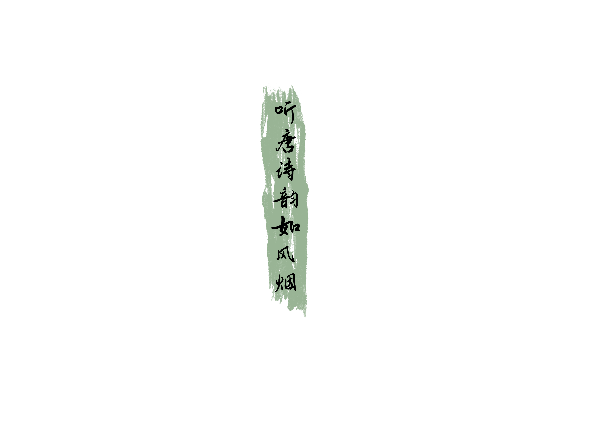

唐诗泛指创作于唐代的诗，也可以引申指以唐朝风格创作的诗，上承魏晋南朝诗，下开宋诗。
“九天阊阖开宫殿，万国衣冠拜冕旒。”唐代中国经济繁荣、社会安定，对外交往频繁，思想自由奔放，近体诗逐渐发展和完善，成为中国古代文学的高峰和典范。
唐诗对于后人研究唐代的政治、民情、风俗、文化等有重要的意义和价值。唐代以后，唐诗的选本、选集不断涌现，清朝的《全唐诗》整理收录了五万多首唐诗，流传最广的是蘅塘退士编选的《唐诗三百首》。
中古四声，亦分前期后期。在魏晋南北朝为前期，声调只有全浊辅音的四个阴调，到了唐宋时期，声调清化(清辅音）后，又增添了四个阳调，这就是字声分阴阳的来源。其实，人们关心的是怎样才能分辨四声呢?一般来讲，平声平，上声升，去声降，入声短，即︰
平声平道莫低昂，上声高呼猛烈强。
去声分明哀远道，入声短促急收藏。
唐诗是是中华文化宝库中的一颗明珠，小的时候总是会看到唐诗三百首，但是唐诗非常之多，根本不止三百首，唐朝最令人瞩目的就是唐诗，而且唐朝有非常多有才华的人，诗人腾出不穷
“以自然物象完成对人的主体生命的暗示，以主体生命完成对客观化自然的审美再造，就成了审美物象得以生成的必要前提条件”。杜甫诗歌中的风雨意象能够从不同角度表现诗人的真实情感，是个人情感背景的烘托，是对社会背景的渲染和象征。诗人的忧患之情、悲伤之情往往在风雨环境的衬托下展开，是诗人民本意识和忧患意识的表达，刻画了诗人忧患的精神历程。
在杜甫的诗歌中，风雨意象在其诗歌的前期作品中往往呈现以积极向上的姿态，表现其得意与自信之情。《夜宴左氏庄》中“林风纤月落，云露静琴张。暗水流花径，春星苇草堂”，这则诗歌描写了庄园静夜景色:上句点明夜景，下句紧承宴事，意象和谐而又形容妥帖，威风起于林间，纤纤初月已落，舒缓的语调与和谐恬静的景物相照应，潺潺细水沿着花径流淌，清冷的露珠让人感到阵阵寒意，夜深了，朋友们宴饮的兴致却不曾稍减，在悠扬的琴声中，互相赋诗助兴，反映诗人此时此景的陶醉。


图 · 意象统计